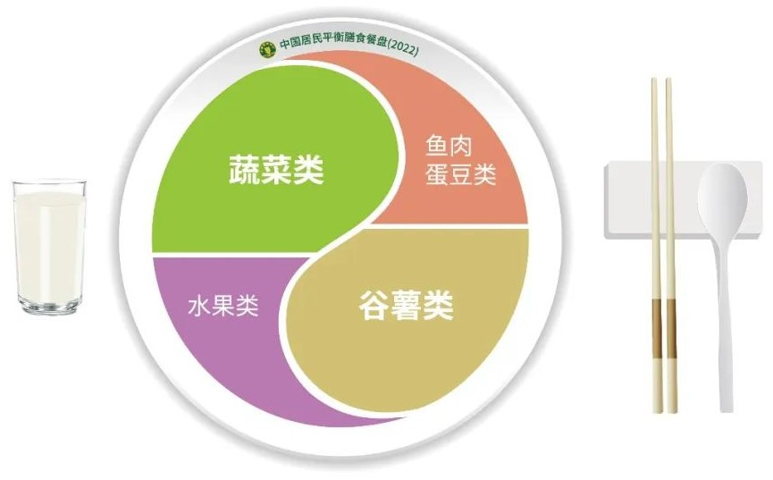

民以食为天，食物不仅是人体能量的来源，更与健康紧密相连。随着生活水平的提升，我国居民营养状况显著改善。每年5月第三周为“全民营养周”，中国营养学会近日发布《中国居民膳食指南（2022）》，旨在指导居民通过平衡膳食改变营养健康状况、预防慢性病、提升健康素养。 在日常生活中，如何做到合理膳食、营养均衡？记者采访了有关专家。 我国居民膳食结构发生巨大变化，高盐成为影响人群健康的重要因素 从吃饱到吃好，再到吃出健康，随着中国人餐桌上的食物不断改变，与之相关的健康问题也在变化。 “从1982年起，我国每10年做一次营养与健康方面的监测，2012年后，监测周期缩短为5年一次。监测数据表明，中国人的膳食结构发生了巨大的变化。”中国疾控中心营养与健康所所长丁钢强告诉记者，1982年，蛋白质营养不良的居民非常多，微量营养素缺乏也非常普遍。如今，这种情况已发生改变，儿童和青少年生长发育迟缓率从10%下降到2%以下。与此同时，成年人体重超标率达到50.7%，高血压、糖尿病等疾病的患病率也在持续增加。 《中国居民营养与慢性病状况报告（2020年）》指出，居民不健康生活方式仍然普遍存在。例如，膳食脂肪供能比持续上升，农村首次突破30%的推荐上限；家庭人均每日烹调用盐和用油量仍远高于推荐值；居民在外就餐比例不断上升，食堂、餐馆、加工食品中的油、盐问题值得关注；儿童青少年经常饮用含糖饮料问题已经凸显。 我国主要疾病原因分析表明，慢性病已经占到人群死因的88%以上，其中，每5例死亡人口当中有2例死于心血管疾病。同时，18岁以上成年人高血压患病率高达27.5%，糖尿病患病率达到11.9%。 国际著名医学杂志《柳叶刀》发表的论文中，曾多次谈到我国心血管疾病和其他慢性疾病致病原因，其中高盐或高钠摄入排在第一位。中国营养学会理事长、膳食指南修订专家委员会主任杨月欣表示，中国居民食盐摄入量现状分析数据表明，目前全国每日盐摄入量不超过5克的成人还很少，多数人每日平均摄入量9克以上，有的甚至高达11克以上，高盐已经成为影响健康的重要因素。 “慢病高发，除了遗传方面的因素，最主要的原因是生活方式的改变。一方面饮食方式发生改变，另一方面运动减少，包括职业活动也在减少。” 丁钢强说，如果运动大幅减少，饮食习惯还停留在过去，选择高油、高盐、高糖食物，对健康影响非常大。 合理膳食能解决78%的慢性病相关问题，摒弃不良饮食习惯是根本 每年春节，在京工作的湖南籍青年欧小慧都会收到老家亲友寄来的腊肉腊鱼，家乡的味道让她齿间留香，倍感温暖。 “健康是可以吃出来的，但一定要讲科学。”杨月欣说，中国人素有美食文化传统，但很多膳食习惯需要作出改变，“烟熏制品、腊肉制品是过去保存食品的一种方法，也形成了一种特别的风味，我国居民非常喜欢。但是它们确实会大大增加胃癌、食管癌的发病风险，建议适度食用。”研究表明，合理膳食能解决78%的慢性病相关问题，比如减少盐的摄入有助于控制57%的高血压发生率。因此，确保健康高质量生活，首先要摒弃不良饮食习惯。 专家表示，很多人对健康饮食的认识有误区。有人因为追求纤细身材拒绝碳水食物，有人认为素食最健康，也有人偏爱大鱼大肉。其实，健康人的食物中，碳水化合物占能量来源的50%至60%，蛋白质占10%至15%，脂肪占20%至30%。碳水化合物占比超过70%或者低于40%，都会提高死亡率风险。所以，即便减肥减脂，也不应该在膳食当中去掉谷物。同样，动物性食品给人类需要提供了优质蛋白、维生素A和B族维生素，但也含有较高脂肪和胆固醇，因此要遵循适量原则，适当摄入鱼、禽、蛋、瘦肉，每天平均摄入120克至200克最佳，不能吃太多。 如何做到每人每日摄入5克盐？杨月欣给出三条建议：一是整体考虑全天食物摄入量，因为除了盐本身以外，其他食物也有可能含钠；二是在家炒菜要按照人份计算总盐量，做到心中有数；三是少吃肉制品，因为无论是加工肉类还是自己在家烹制肉类，盐消耗量都较大，所以尽量少买加工肉特别是腌制熏制的肉类。 “《中国居民平衡膳食宝塔（2022）》已经面世，每天摄入的油、盐、奶制品、蔬果、谷物、动物性食物需要多大量，看图谱一目了然，每天的膳食‘照章办事’就好。”杨月欣说。 应回归植物性食物为主的膳食模式，专家推荐“东方健康膳食模式” 近几年，“地中海饮食”在网上走红，成为不少人追逐的健康膳食模板。《中国居民膳食指南（2022）》首次提出“东方健康膳食模式”概念，令人耳目一新。 所谓膳食模式，就是一段时间内膳食中所有食物的品种、数量、比例和消费的频率，它受到很多因素影响，包括农业生产、地理环境、宗教信仰、人口流动等。 2019年，《柳叶刀》曾将195个国家和地区的膳食和疾病状况进行比较认为，中国膳食盐摄入太多，精制谷物太多。膳食指南修订专家委员会副主任、北京大学第三医院营养生化研究室主任常翠青认为，中国人传统的膳食结构是以植物性食物为主，从20世纪90年代开始，膳食结构慢慢变化，动物性食品摄入比较多。基于食物与健康研究的证据，中国人应回归植物性食物为主的膳食模式。 “我国地大物博，不同地区有不同膳食代表，其中不乏健康的膳食模式。”杨月欣表示，我国烹饪文化具有民族特色，江南及广东、福建沿海一带居民膳食营养状况相对较好，膳食的主要特点是：烹调清淡少盐，食物多样，谷物为主，有丰富的蔬菜水果，经常吃鱼虾等水产品、大豆制品和奶类等。中国疾病预防控制中心膳食营养调查和慢性病调查发现，这些地区高血压等慢性病患病率低，人均预期寿命尤其是健康预期寿命较高，超重肥胖发生率相对比较低。比较发现，这一模式与平衡膳食模式较接近，《中国居民膳食指南（2022）》首次将其定义为“东方健康膳食模式”，并予以推荐。 “一方水土养一方人，中国人要基于国土资源来安排合理饮食。”常翠青认为，不仅在南方，通过合理搭配，其他地区也可以找到健康膳食的解决方案。 在新版膳食指南中，“食物多样，合理搭配”的原则位列第一。膳食指南修订专家委员会副主任杨晓光说，人们可选择的食物丰富多样，只有通过合理搭配，才能满足机体方方面面的需要。 新版膳食指南提倡每天平均摄入12种以上食物，每周摄入25种以上食物。合理搭配，意味着不同人群要有个性化选择，健康人要搭配不同食物以达到营养平衡。老人、婴幼儿等特殊人群，更需要膳食合理搭配。 近年来，外卖点餐成为不少人尤其是年轻人的生活方式。调查发现，外卖点餐食物中的前20位都是肉类，油炸食品占比高，辛辣口味特别受欢迎，极少有人点蔬菜和水产品。 “吃外卖是为了便捷，但外卖选餐时，人们更容易挑选重口味的高油高盐餐食，很难顾及营养均衡。如果每周多次购买这样的食物，很容易养成口重的习惯。”杨月欣说，吃饭是人生第一要事，不仅影响个人身体健康，还关乎全民健康素质，甚至影响整个社会的医疗体系、食物可持续发展、生态环境等。希望大家充分重视“饮食与健康”这件大事，学会认识食物、选购食物，自己设计膳食，尽量回家做饭，保证合理搭配，做到均衡营养，促进身体健康。